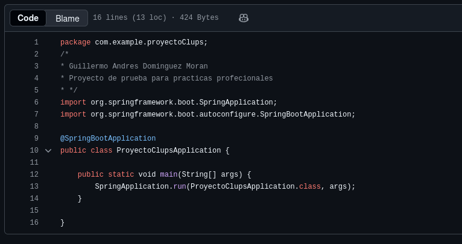

¿Quien soy?
Hola soy Guillermo
Soy Ingeniero en Ciencias de la Computacion
Mi interés principal esta en el desarrollo backend. Disfruto trabajar con Java y gracias a esto tengo conocimientos en su principal framework Spring Boot y ademas estoy familiarizado el diseño del bases de datos relacionales. Me gusta aprender constantemente, asumir retos y siempre e tenido la costumbre de tratar de llevar el mayor control sobre los proyectos que decido hacer.
Conocimientos
Lenguajes
Frameworks
Bases de Datos
Sistemas Operativos
Softwares
Proyectos
Proyecto clubs
Este proyecto fue realizado como parte de mis practicas profesionales en el que se gestionan clubes de automoviles y sus clientes. Consistió en crear un web service con Spring Boot y Hibernate para consultar los chips activos por club, garantizando que solo se mostraran los clientes y autos vigentes.
Caracteristicas Principales:
- Implementación de relaciones entre tablas mediante Hibernate.
- Generación automática de tablas a partir de POJOs.
- Uso de streams de datos para procesar información.
- Manejo de conexiones con HikariCP.
- API tipo GET que recibe el id del club y devuelve los chips activos.
Tecnologias
- Java
- Spring Boot
- MariaDB
- Hibernate
Datos de Contacto
- Telefono: +52 221 130 9739
- Correo: memodino00@gmail.com